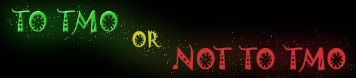

|  |
| Home | The Movie | Cast & Crew | Soundtrack | How-To Guide | Screenshots | Riley Entertainment |
How-To Guide
This film uses a variety of techniques to achieve its "visual effects". Some of these items have become well-established, and can be found in many TMO films. Others may be lesser known, and others are new for this film. Use the navigation bar to the right to read about how each technique was achieved.
The term "modding" refers to "game modifications". This can include more simple modifications such as changing the texture of a prop, up to more complex modifications such as creating brand new props or sets. If you use modded content from other people in the community, it is common courtesy to keep track of who created what, and to include a simple "Thank You" in your film's description. Here are some of The Movies fan sites with modded content:
Director's Cut Modding Foundry (no longer available) - This is where much of the discovery of new modding techniques occurs. It is also home of the fan-made MED (the Movies EDitor), written by Derobrash; MeshManip, written by Reacher; and various scene and animation tools, written by Gleem. Run by Gleem.
SkinShack (no longer available) - A fan site containing mods, tutorials, another place to upload your movies, and many other nick-nacks! Run by Ranger21.
8-Eyed Baby - Another fan site containing mods, music, and other nick-nacks! Run by Ozman69.
FraasMovies.com (now redirects, might still be relevant?) - A German fan site (in both English and German) contains mods, tutorials, and other nick-nacks! Run by FraasMovies.
Riley's Modding Updates thread (no longer available) - This is where I post all of my mods! Have a good look around the Mod Showcase forums for many other updates from other TMO members.